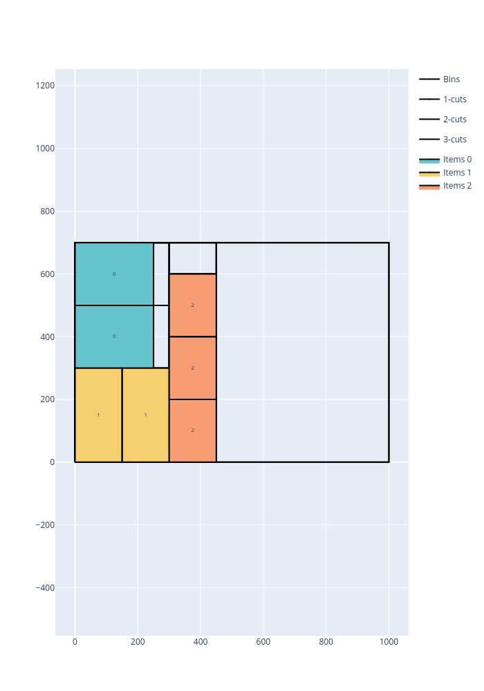

RectangleGuillotine solver¶
The RectangleGuillotine solver solves problems where items are two-dimensional rectangles that must be cut from rectangular bins using guillotine cuts — cuts that go all the way from one side of the current plate to the other.

These problems occur for example in glass cutting, wooden panel cutting, and paper cutting industries.
Features:
Objectives:
Knapsack
Bin packing
Bin packing with leftovers
Open dimension X
Open dimension Y
Open dimension XY
Variable-sized bin packing
Item types
Item rotation (90°)
Stacks (items that must stay grouped)
Bin types
Trims (border offsets on each side)
Rectangular defects
Cutting constraints
Number of cutting stages
Cut type (Roadef2018, NonExact, Exact, Homogenous)
First stage orientation (horizontal or vertical)
Minimum and maximum distances between cuts
Maximum number of 2-cuts per strip
Cut thickness
Usage¶
The RectangleGuillotine solver takes as input:
an item CSV file; option:
--items items.csva bin CSV file; option:
--bins bins.csvoptionally a defect CSV file; option:
--defects defects.csvoptionally a parameter CSV file; option:
--parameters parameters.csv
It outputs:
a solution CSV file; option:
--certificate solution.csv
The item file contains:
The width of the item type (mandatory)
column
WIDTHInteger value
The height of the item type (mandatory)
column
HEIGHTInteger value
The number of copies of the item type
column
COPIESdefault value:
1
Whether the item is fixed in its original orientation (cannot be rotated 90°)
column
ORIENTED0: rotation allowed (default)1: item is oriented; rotation not allowed
The profit of an item of this type (for a knapsack objective)
column
PROFITdefault value: item area (
WIDTH * HEIGHT)
The stack identifier; items with the same stack id must remain contiguous in the solution
column
STACK_IDdefault value: no stack grouping
The bin file contains:
The width of the bin type (mandatory)
column
WIDTHInteger value
The height of the bin type (mandatory)
column
HEIGHTInteger value
The number of copies of the bin type
column
COPIESdefault value:
1
The minimum number of copies that must be used
column
COPIES_MINdefault value:
0
The cost of a bin of this type (for a variable-sized bin packing objective)
column
COSTdefault value: bin area
Border trims: distances from each edge before any item can be placed
columns
BOTTOM_TRIM,TOP_TRIM,LEFT_TRIM,RIGHT_TRIMInteger values, default:
0
Trim types: whether trimming strips are cut (hard) or just reserved (soft)
columns
BOTTOM_TRIM_TYPE,TOP_TRIM_TYPE,LEFT_TRIM_TYPE,RIGHT_TRIM_TYPEHard: the trim is physically cut; the strip is wasteSoft: the trim is reserved but not cut; default for top and right trims
The defect file contains the same columns as for the Rectangle solver: BIN, X, Y, WIDTH, HEIGHT.
The parameter file has two columns: NAME and VALUE. The possible entries are:
The objective; name:
objective; possible values:knapsackbin-packingbin-packing-with-leftoversopen-dimension-xopen-dimension-yvariable-sized-bin-packing
Cutting constraints (all have integer values unless noted):
number_of_stages: number of cutting stages (default:3)cut_type: cut pattern type;roadef2018,non-exact,exact, orhomogenousfirst_stage_orientation:verticalorhorizontalminimum_distance_1_cuts: minimum distance between first-level (stage-1) cuts (default:0)maximum_distance_1_cuts: maximum distance between first-level cuts;-1for no limitminimum_distance_2_cuts: minimum distance between second-level cuts (default:0)minimum_waste_length: minimum length for any waste piece (default:0)maximum_number_2_cuts: maximum number of stage-2 cuts per strip;-1for no limitcut_through_defects:0or1; whether cuts may pass through defects (default:0)cut_thickness: width of the saw blade (default:0)
Basic example¶
Inputs:
WIDTH,HEIGHT,ORIENTED,COPIES
250,200,0,2
150,300,0,2
200,150,0,3
WIDTH,HEIGHT,COPIES
1000,700,5
NAME,VALUE
objective,bin-packing-with-leftovers
Solve:
packingsolver_rectangleguillotine \
--items items.csv \
--bins bins.csv \
--parameters parameters.csv \
--certificate solution.csv
=================================
PackingSolver
=================================
Problem type
------------
RectangleGuillotine
Instance
--------
Objective: BinPackingWithLeftovers
Number of item types: 3
Number of items: 7
Number of bin types: 1
Number of bins: 5
Number of stacks: 3
Number of defects: 0
Number of stages: 3
Cut type: NonExact
First stage orientation: Vertical
Minimum distance between 1-cuts: 0
Maximum distance between 1-cuts: -1
Minimum distance between 2-cuts: 0
Minimum waste length: 0
Maximum number of consecutive 2-cuts: -1
Cut through defects: 0
Cut thickness: 0
Total item area: 280000
Total item profit: 280000
Largest item profit: 50000
Largest item copies: 3
Total bin area: 3500000
Largest bin cost: 700000
Time # bins Waste Waste (%) Comment
---- ------ ----- --------- -------
0.000 1 385000 57.89 TS g 0 d Vertical q 1
0.001 1 280000 50.00 TS g 0 d Vertical q 3
0.001 1 210000 42.86 TS g 1 d Vertical q 1
0.001 1 175000 38.46 TS g 0 d Vertical q 6
0.001 1 70000 20.00 TS g 0 d Vertical q 13
0.002 1 35000 11.11 TS g 0 d Vertical q 28
0.012 1 35000 11.11 TS g 1 d Vertical q 211
Final statistics
----------------
Time (s): 5.00012
Solution
--------
Number of items: 7 / 7 (100%)
Item area: 280000 / 280000 (100%)
Item profit: 280000 / 280000 (100%)
Number of bins: 1 / 5 (20%)
Number of different bins: 1
Bin area: 700000 / 3500000 (20%)
Bin cost: 700000
Waste: 35000 (11.1111%)
Full waste: 420000 (60%)
Width: 450
Height: 700
Second leftover value: 15000
Visualize:
python3 scripts/visualize_rectangleguillotine.py solution.csv
{kind=link}

Cutting stages¶
A guillotine cut divides a plate into two sub-plates. Repeated cuts create a hierarchy of plates:
Stage 1: cuts that divide the original bin into vertical (or horizontal) strips
Stage 2: cuts inside each strip, perpendicular to stage-1 cuts
Stage 3: cuts inside the resulting sub-strips (exact cutting only)
The number of stages controls how many levels of cuts are applied. Three-stage cutting is the most common in practice.
Cut types¶
roadef2018: pattern from the 2018 ROADEF challenge; stage-2 cuts produce only items of identical height; trimming cuts are allowednon-exact: more flexible; stage-3 cuts are not required; some waste is allowed in sub-platesexact: items must fill their sub-plate exactly with no waste at stage 3homogenous: all items in a strip have the same height
Trims¶
Trims model a reserved border around the bin (e.g., for clamping or edge defects). They prevent items from being placed within the specified distance of each edge.
A hard trim is physically cut away: the trim strip is counted as waste.
A soft trim is reserved but not cut: waste is only counted from the first actual cut inward.